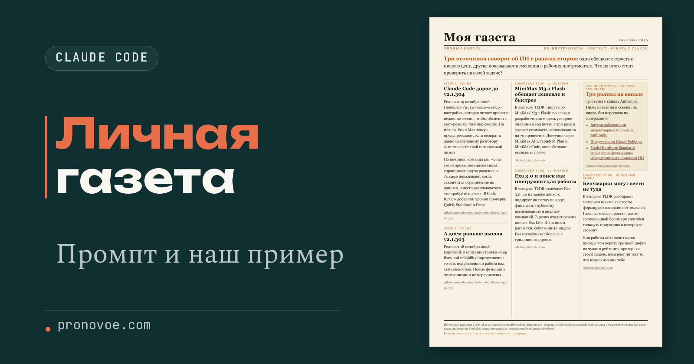
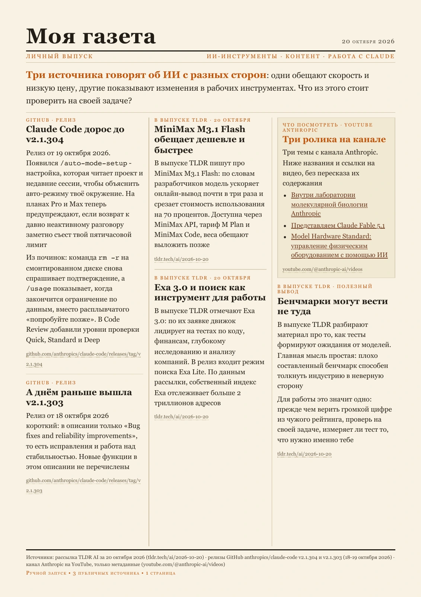
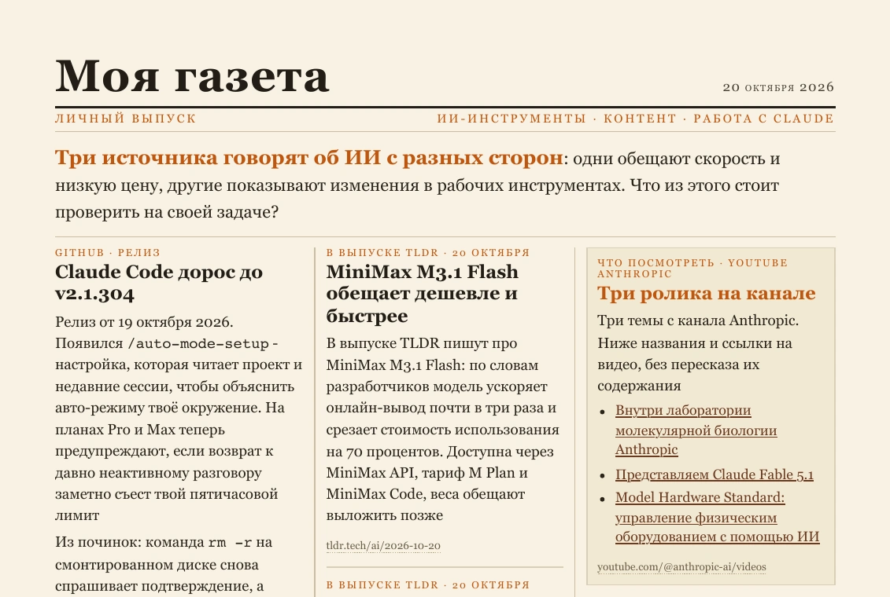

Личная газета в Claude Code: промпт и наш пример
Средний уровень
Я больше не начинаю утро с плохих новостей. Клод собирает мне газету из того, что меня радует. Для выпуска я выбрала рассылку, YouTube и релизы Claude Code. Получилась газетная страница со ссылками на источники. Ниже можно рассмотреть результат и повторить его по полному промпту. Самое полезное условие в нём оказалось связано не с оформлением
Открыть содержание
Перед началом
Показываю процесс на примере Claude Code на компьютере. Он уже должен быть установлен, а вход в аккаунт выполнен. Для личного аккаунта в этом маршруте используем подписку Pro или Max. Нашу газету собирали на Pro
Если Claude Code пока нет, сначала открой инструкцию подключения Claude Code в VS Code и выполни разделы про установку расширения и вход. Вернись сюда, когда сможешь открыть рабочий разговор с Клодом
Для источников нашего примера отдельные подключения MCP не нужны. Письма из личной почты, историю YouTube и закрытые аккаунты мы не подключали: используются открытые страницы рассылки, канала и GitHub
Открываем папку для газеты
Папка нужна, чтобы Клод сохранял газету и материалы в одном месте. Для нового проекта создай в домашней папке пользователя папку moya-gazeta.
Если работаешь в панели Claude Code в VS Code
Открой в VS Code меню «Файл → Открыть папку» и выбери moya-gazeta. Затем открой панель Claude Code и начни новый разговор. Если нужная папка и разговор уже открыты, переходи сразу к промпту для газеты. Терминал для этого способа не нужен.
Если запускаешь Claude Code через терминал
Терминал позволяет запустить установленную программу текстовой командой. Здесь он нужен только для подготовки папки и запуска Клода в ней. Эти команды ничего не устанавливают: первая создаёт папку, вторая делает её текущей, а claude запускает Claude Code.
На Mac открой «Терминал» через поиск Spotlight и выполни эти три команды по очереди:
mkdir -p ~/moya-gazeta
cd ~/moya-gazeta
claudeНа Windows открой PowerShell и выполни команды по очереди:
New-Item -ItemType Directory -Force "$HOME\moya-gazeta"
Set-Location "$HOME\moya-gazeta"
claudeЭтот вариант предполагает, что установлен Claude Code для терминала. Одного расширения VS Code для команды claude недостаточно. Если пользуешься расширением, выбирай способ выше.
Результат: открыт разговор с Claude Code в папке moya-gazeta. Дальше все запросы отправляй в этот разговор.
Подставляем свои данные и собираем выпуск
Нажми «Скопировать» у промпта на этой странице и вставь текст в разговор с Claude Code. Если хочешь свой выпуск, замени выделенные значения до отправки. Затем нажми Enter
Пять значений в квадратных скобках выделены цветом: темы, название газеты и три адреса. Для первого повтора оставь наши значения. Для своего выпуска замени только содержимое этих скобок; остальной текст сохрани. Скобки служат подсказкой, их можно убрать вместе с заменой
Собери мою личную газету на русском языке из трёх публичных источников. Мои темы: [ИИ-инструменты, создание контента и работа с Claude]. Название газеты: [Моя газета]. Нужен разовый ручной запуск в Claude Code, без сторонних скиллов, рассылок на почту и расписания.
Значения в квадратных скобках - мои темы, название и адреса. При обращении к адресам используй их без квадратных скобок.
Используй эти источники:
1. Последний доступный открытый выпуск TLDR AI из архива [https://tldr.tech/ai/archives]
2. Открытый YouTube-канал Anthropic [https://www.youtube.com/@anthropic-ai/videos]
3. Публичные GitHub-релизы Claude Code [https://github.com/anthropics/claude-code/releases]
Сначала получи материалы по этим адресам доступными тебе средствами. Для GitHub можно использовать публичный API указанного репозитория. Не считай, что в рабочей папке уже есть какие-либо скрипты: всё необходимое для получения источников и экспорта подготовь сам в новой папке gazeta. Не меняй другие файлы проекта.
Сохрани адрес, реальную дату и полученный текст каждого источника. Если источник не открывается, не придумывай его содержание и не заменяй другим молча: отметь ограничение и используй доступные материалы. Если материалов слишком мало для газеты, сообщи об этом вместо выдуманных новостей.
Выбери 5-6 коротких заметок по моим темам. Убери рекламные блоки, не дублируй одну новость. Для сообщений рассылки сохраняй атрибуцию: «В выпуске TLDR пишут…». Не выдавай пересказ за независимую проверку. Для YouTube, если доступны только названия и ссылки, сделай рубрику «Что посмотреть», без выдуманного пересказа видео. Не называй все материалы новостями последних суток, если их даты разные.
Собери index.html как одну настоящую газетную полосу A4: название из начала промпта в заголовке, текущая дата, крупный лид, три колонки, тонкие разделители, шесть коротких заметок или меньше, если подтверждённого материала меньше. Тёплая светлая бумага, тёмный текст, небольшие оранжевые акценты, шрифты с засечками в заголовках. У каждой заметки поставь ссылку на её источник. Сделай текст читаемым, без обрезки и наложений. Не используй внешние картинки и шрифты, фотографии и цитаты не выдумывай. Внизу укажи источники и пометку «Ручной запуск • Публичные источники • 1 страница».
Пиши связно, без рекламных блоков, длинных тире и точек в конце абзацев. В начале дай краткую подводку к содержанию, полезный вывод поставь ближе к концу. Сохрани также issue.json: заголовок и текст каждой заметки, её источник, ссылку, короткий подтверждающий фрагмент и ограничения.
Из того же HTML сделай gazeta.pdf доступным на этом компьютере способом. Если подходящего средства экспорта нет, назови недостающее средство и не утверждай, что PDF создан. Не ставь новые сервисы и не регистрируй аккаунты без моего решения. Если PDF получился, проверь, что он ровно на одну страницу A4, весь текст виден и ссылки сохранены. Открой готовые HTML и PDF.
Не отправляй ничего на принтер и по email. Не включай автоматический запуск. Не обещай готовность к шести утра, время чтения, чтение всего YouTube или гарантированную доступность из любой страны. В конце перечисли полученные файлы и реальные ограничения.Ожидаемые действия Клода: получить материалы по адресам из запроса и создать файлы в папке gazeta, например gazeta/index.html. Если запрос касается другой папки или установки новой программы, сначала попроси объяснить, зачем это нужно, и показать вариант без установки. Если вместо готовой страницы Клод только описал план, отправь короткое продолжение
Выполни запрос до готовых файлов. Сохрани газетную страницу в gazeta/index.html и материалы со ссылками в gazeta/issue.json. Открой HTML. Если PDF ещё не создан, явно сообщи об этом. Не заменяй создание файлов описанием планаРезультат: в папке gazeta появляется index.html с газетной полосой и issue.json с материалами и ссылками. В issue.json Клод сохраняет материалы и ссылки отдельно от вёрстки. Если Клод не открыл газету сам, найди в домашней папке пользователя moya-gazeta/gazeta и дважды нажми на index.html. Проверь название, дату, три колонки и ссылки под заметками
Если папка не находится, попроси Клода показать её и открыть результат
Покажи полный путь к созданному index.html, открой папку с этим файлом и сам HTML в браузере. Если файла нет, сначала создай его по предыдущему запросуСмотрим нашу получившуюся газету
В нашем выпуске от 20 октября 2026 года получилось шесть материалов на одной странице. Две заметки посвящены релизам Claude Code, ещё несколько взяты из TLDR, отдельно собраны ссылки на ролики Anthropic

Можно также открыть HTML нашего выпуска. Это уже результат, а не картинка макета: текст выделяется, ссылки ведут к материалам
Вот верх страницы крупнее. У заметок есть конкретные заголовки, а рубрика YouTube честно называется «Что посмотреть»

У источников оказались разные даты. Поэтому выпуск не назван обзором строго последних суток
Сохраняем выпуск в PDF
Если Клод создал gazeta.pdf, открой его: должна быть одна страница, без обрезанных заголовков и нижней строки. В нашем PDF сохранились активные ссылки на источники. Открой одну из них для проверки: например, ссылку под заметкой. PDF поддерживает ссылки, но при некоторых способах экспорта они могут потеряться; тогда источник можно открыть из HTML
Если автоматический экспорт не сработал, открой HTML в Chrome. Нажми Ctrl+P на Windows или Command+P на Mac. В окне печати выбери сохранение в PDF, формат A4 и включи фоновую графику. В предварительном просмотре проверь, что получилась одна страница. В окне сохранения выбери папку moya-gazeta/gazeta и имя gazeta.pdf
Если предпросмотр показывает две страницы, не обрезай вторую наугад. Вернись к Клоду и попроси подогнать вёрстку
Подгони gazeta/index.html под одну страницу A4 при сохранении в PDF. Сохрани заметки, заголовки, ссылки и нижнюю строку источников. Не прячь содержимое и не обрезай вторую страницу. Сначала сократи лишние формулировки или предложи убрать одну заметку. Сохрани читаемый размер текста. Покажи, что изменилось, и заново открой страницуПосле изменения HTML заново открой предварительный просмотр печати. Сохраняй PDF, когда в нём одна страница, а нижняя строка источников видна целиком
Сохраняем правила для следующих выпусков
Когда первая газета понравится, скопируй этот запрос в тот же разговор. Он сохранит правила рядом с выпусками, чтобы в следующий раз не собирать их заново
Сохрани в папке газеты файл pravila-gazety.md с моими текущими темами, названием газеты, точными адресами источников и требованиями к выпуску. Запиши: одна страница A4, до шести коротких заметок, три колонки, ссылка под каждой заметкой, реальные даты, без рекламы и повторов. Сведения из рассылки приписывать рассылке. Если от видео есть только название и ссылка, оставлять рубрику «Что посмотреть». При недоступном источнике сообщать об этом, а не придумывать содержание. Выпуск запускать только по моему сообщению. Старые номера сохранять. После записи покажи содержимое файлаСамая полезная часть запроса теперь видна на готовом листе: каждая заметка связана с источником, а Клоду разрешено честно остановиться, если прочитать материал не получилось. Эти условия помогают получить газету, которой можно пользоваться после красивого первого впечатления
Меняем темы и выпускаем следующий номер
Для выпуска с упором на контент добавь к следующему запросу: «Включай обновления, которые помогают готовить текст, изображения и видео. Общие новости про модели без такого применения пропускай»
При замене рассылки или канала попроси сначала проверить доступ к новому адресу и показать полученный материал. Название сайта в ответе ещё не подтверждает, что Клод прочитал страницу
Для следующего выпуска открой папку moya-gazeta и запусти в ней Claude Code. Правила из сохранённого файла доступны и в новом разговоре. Отправь:
Сначала прочитай pravila-gazety.md в этой рабочей папке. Возьми из него темы, название газеты, точные адреса источников и требования. Если файла нет, сообщи об этом и не угадывай настройки. Собери следующий выпуск по этим правилам. Сначала проверь доступность материалов и их реальные даты. Сохрани новый номер в отдельной папке gazeta/ВЫПУСК-ДАТА, заменив ДАТА текущей датой в формате ГГГГ-ММ-ДД. Старые выпуски не перезаписывай. Используй те же требования к одной странице, ссылкам и честному описанию источников. Если доступного материала мало, не выдумывай заметки и скажи об этомВ результате будет новая папка выпуска, а старый номер останется на месте. Этот пример запускается твоим сообщением. Автоматический выпуск к определённому часу настраивается отдельно, после того как устраивает сам отбор
Исправляем то, что мешает выпуску
Клод просит файлы, которых у тебя нет
В нашей технической записи были вспомогательные скрипты. Промпт в этой статье переписан так, чтобы не ссылаться на файлы моего компьютера. Если Клод всё же ждёт готовую заготовку, напиши: «Подготовь необходимые файлы сам в папке gazeta. Используй публичные адреса из моего запроса»
Один из источников не открывается
Открой адрес в своём браузере. Если видишь ошибку или требование входа, дай другую открытую страницу либо скопируй доступный текст в отдельный файл и передай его Клоду. Попроси явно отметить замену. Придуманное содержание недоступной страницы в выпуск не берём
Вместо заметки получился пересказ непросмотренного видео
Проверь, что Клод действительно получил текст видео. Если есть только название и ссылка, попроси оставить рекомендацию «Что посмотреть». В нашем примере именно так: видео не расшифровывались
Текст мелкий или не помещается
Сначала попроси сократить число заметок, сохранив источники и главный смысл. После этого можно сократить текст каждой заметки. Если просто уменьшать весь шрифт, одна страница получится, а читать её будет неудобно
HTML есть, а PDF нет
Открой HTML и используй сохранение через печать браузера. Если самого HTML тоже нет, вернись к продолжению про создание файлов: ответ Клода со списком будущих действий не заменяет готовую газету
Частые вопросы
Нужно устанавливать скилл /daily-paper?
Для нашего способа не нужно. Мы использовали собственный текстовый запрос в обычном Claude Code. Название команды из чужого примера не является обязательной встроенной функцией Клода
Получится такая же газета, как на картинке?
Промпт задаёт одну страницу, три колонки, заголовок, ссылки и цвета. Модель может иначе распределить заметки. Наш PDF можно открыть как ориентир для уточнения вёрстки, а содержание нового номера будет зависеть от доступных источников
Перед публикацией своей газеты для читателей проверь исходные ссылки, дату выпуска и размер текста на телефоне. Затем попроси агента подготовить страницу для выбранной площадки: одного HTML в папке на компьютере для читателей недостаточно. Ниже - примеры работы ИИ-агентов с контентом, страницами и продуктами без кода
Что можно делать с нейросетями, если не знаешь кода?
Чтобы почувствовать размах, посмотри Концентрат Ивана Сергеева. ИИ-агенты на твоих глазах собирают продукт, контент, сайты и воронки без кода. Это основа под любую цель: свои услуги, партнёрка, чужой бизнес. Три дня бесплатно, VIP с четвёртым днём - 990 ₽
Забрать КонцентратУже знаешь, чего хочешь? Тогда в мастер-группу Ивана: система продаж на ИИ без продюсера и технаря, сопровождение и сообщество
Заполнить анкету предзаписиНабор открывается редко, кто записался заранее, получает лучшую цену и бонусы. Платить сейчас не нужно
Реклама. ИП Сергеев И. С., ИНН 352511695540. erid: 2Vtzqvk2p6q